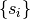
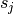
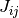
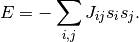
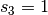
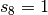
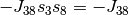

Boltzmann machine is much like a spin glass model in physics. In short words, Boltzmann machine is a machine that has nodes that can take values, and the nodes are connected through some weight. It is just like any other neual nets but with complications and theoretical implications.
To obtain a good understanding of Boltzmann machine for a physicist, we begin with Ising model. We construct a system of neurons  which can take values of 1 or -1, where each pair of them and  is connected by weight .
This is described as a Boltzmann machine, or spin glass in physics. Spin glass is a type of material that is a composite of many spins pointing in different directions. In principle spin glass is hard to calculate.
Neverthless we can make simplifications to this model. We require each spin to be connected to its nearest neighbours only. Such a model is called Ising model.
Intuitively, those spins can be viewed as tiny magnets that can point up or down only. Each spin interacts with its neighbours. These interactions are calculated in terms of energy,

Why do we care about energy? For a physics system, low energy means stable while high energy means unsatble since it might automatically change its configuration into low energy state. That being said, a system of spins is stable if the energy of all the interactions is low.
To find out a low energy state, one of the numerical methods is Monte Carlo method.
Hebbian Learning Rule
Simply put, neurons act similarly at the same time would be more likely to be connected.
A energy minimization procedure would be the same as Hebbian learning rule. Suppose we pick out two spins,  and , the connected weight would be positive in order to have lower energy . For spins with different signs, negative weight would be the choice to make sure the energy is lower. This is similar to Hebbian learning rule.